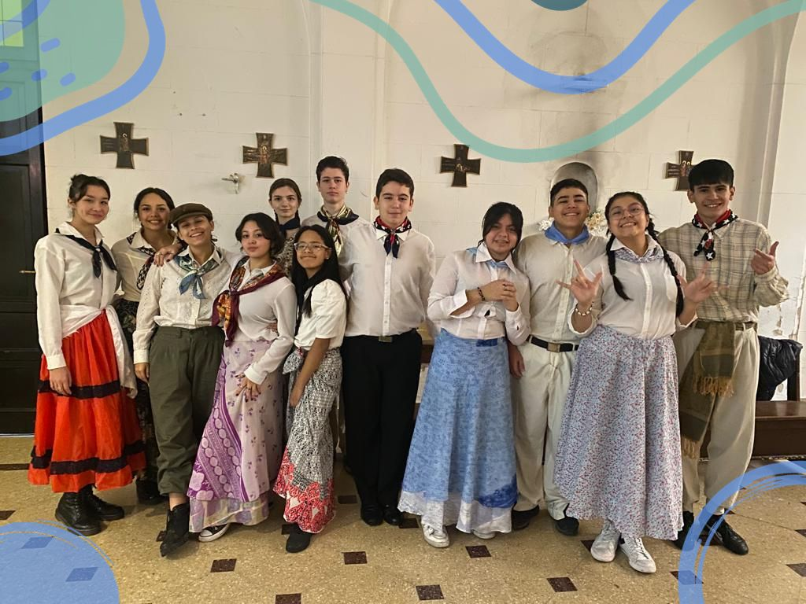
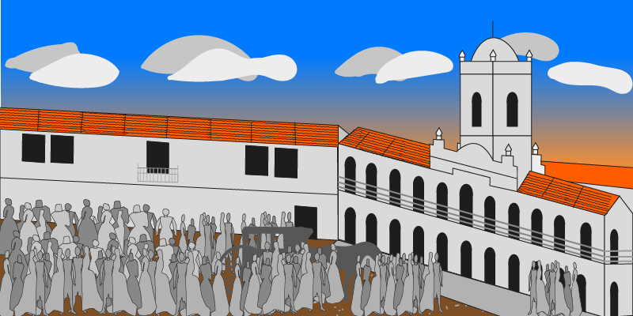

Acto Aniversario de la Revolución de Mayo de 1810
Por: Thiago Lopez Moro y Sofía Cosco 3°B
El acto se realizó el 30 de mayo con la participación de alumnos de varios cursos de la secundaria.

También con la coordinación de los profesores Myriam Marecos, Griselda Orellano, German Catallin, Florenzia Bazzini, Fernando Fariña, Daniela Villegas, Mara Prieto, Luciano Pagano y Victor Zanon.
Las prácticas empezaron el 16 de mayo (aproximadamente), contamos con actores, bailarines y cantantes.

La idea principal del acto consistió en un streaming de French y Beruti en el que interpretaban
lo sucedido el 25 de mayo de 1810 donde French y Beruti interactuaban con las personas y periodistas que estaban en la plaza para informar de la situación en la que se encontraban. Luego de finalizar el streaming se dirigieron hacia
la plaza donde los alumnos representaron a los vecinos de aquella época.
Cabildo realizado en Adobe Illustrator por el alumno Segundo Gomez Roca de 3°B

Los bailarines utilizaron ropa de paisanas y gauchos, bailaron “La chacarera del rancho”. Los actores se vistieron como los próceres, entre ellos Saavedra, Beruti y French.
Las cantantes Angeles de Urquiza y Camila Baduy interpretaron la canción de Fito Páez “Dale alegría a mi corazón”.
Al terminar sus interpretaciones la profesora Bazzini dio un cierre al acto y convocó al rector Ricardo Barboza que finalizó agradeciendo y dando las últimas palabras del acto.